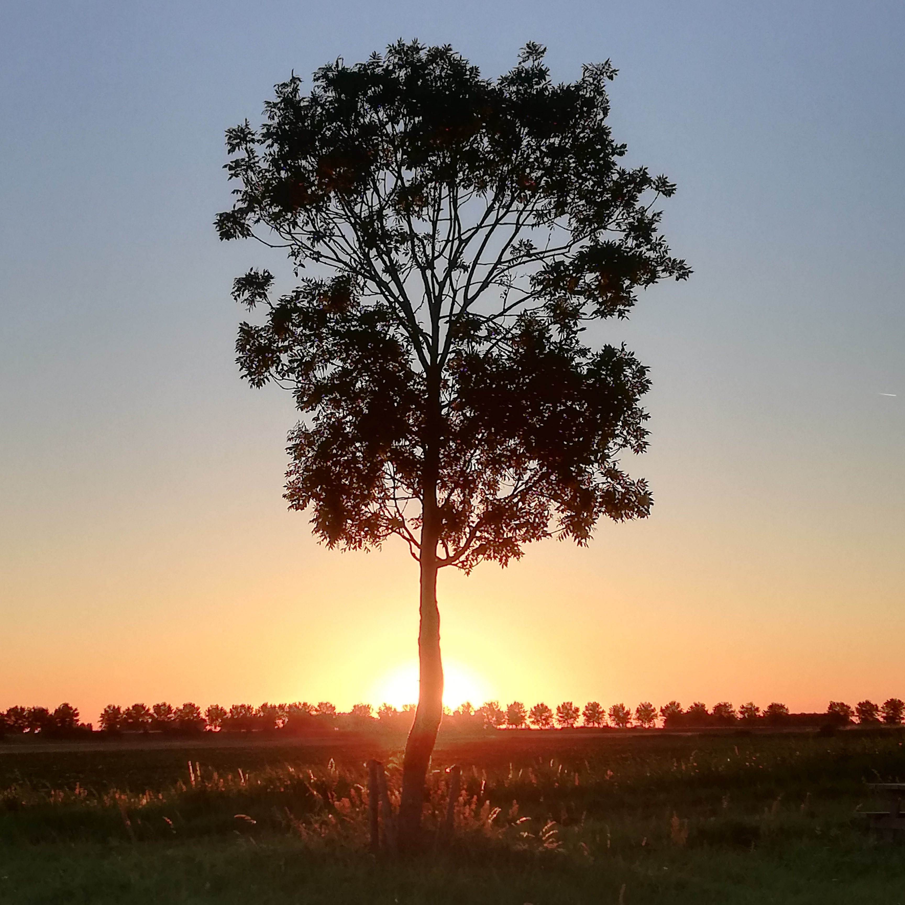

Het HBO-niveau past bij mij, omdat ik zowel individueel en in een groep doelgericht te werk kan gaan. Ik vind
het namelijk leuk om nieuwe ervaringen en kennis op te doen door interactie met anderen.
Tevens doe ik graag zelf onderzoek om een probleem op te lossen en kom ik met ideeën om de samenwerking
tussen collega's/klasgenoten soepel te laten verlopen.
Voordat ik aan de opleiding HBO-ICT begon heb ik al eens eerder gewerkt met scripts en code, deze
ervaring heb ik op gedaan tijdens het maken van een game voor mijn PWS met behulp van het programma
RPG-maker.
Hieruit is een intresse voortgekomen in hoe de scripts werkten en wat er met coderen kan worden bereikt.
De desbetreffende game kunt u hier downloaden.
Vorig jaar heb ik gedurende een studievrije periode lang nagedacht over welke opleiding het beste bij mij zou
passen. Na vele open- en meeloopdagen wist ik het zeker het werd de opleiding HBO-ICT.
Wat mij naast mijn eerder benoemde intresse in coderen tot de opleiding aantrok was de informele aanpak
in de omgang tussen studenten en docenten waardoor er veel individuele aandacht is.
Ook vond ik de mogelijkheid om thuis te kunnen werken en studeren erg aantrekkelijk aangezien ik in het
verleden veel gezondsheidsproblemen heb gehad.
De internationale mobiliteit van het beroep en de vraag naar een groot aantal mensen binnen de
ICT-sector spraken mij daarnaast tevens aan, want ik ben van plan om niet in Nederland te blijven na het
afronden van mijn studie.
In mijn vrije tijd schilder ik en neem ik graag foto's zoals deze: 
Voor een lijst met een aantal van de vaardigheden waarover ik beschik kunt u terecht op de "Over mij" pagina.